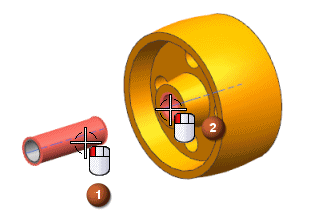
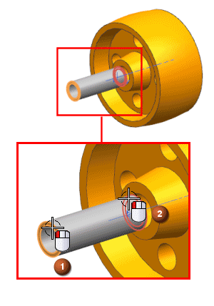
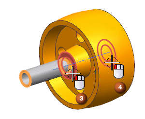
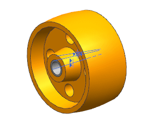

您将通过对齐轴套与滚轮的中心来约束轴套。
在方位列表中，确保选择的是自动判断中心/轴 。
选择 des03_caster3_bushing 的外圆柱面和 des03_caster3_wheel 的内圆柱面。

从类型列表中，选择中心 。
在要约束的几何体组的子类型列表中，选择2 to 2。
对于第一个对象，选择 des03_caster3_bushing 的两个端面。

对于第二个对象，选择 des03_caster3_wheel 上对应的两个端面。

提示 |
您可以使用快速拾取对话框来选择隐藏的面，在选择条上，打开允许选择隐藏线框 。 |
点击应用。
